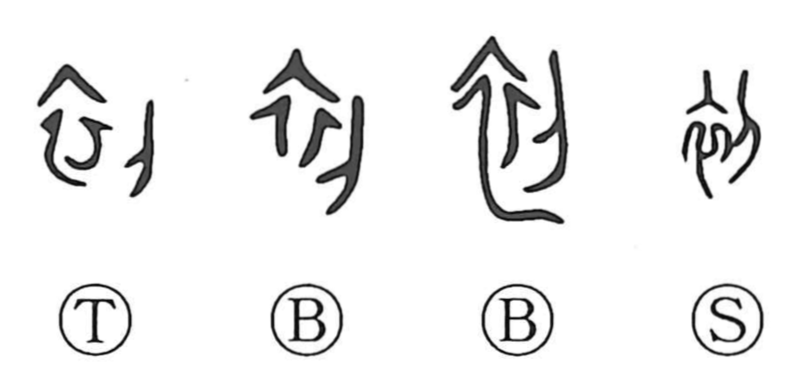

初

Kun: hajime, hajimete, ui, someru | On: sho, hatsu
first ・ beginning ・ to begin
Explanation
初 combines 衣, clothing, with 刀, a blade. The cloth is cut to make a child's first garment, the clothing prepared for a newborn. This inaugural making gives the image of a beginning.
Clothing could receive and convey spiritual presence, so preparing it belonged to the rites through which a new life was protected and admitted into its human setting. The first cut marks the start of the work and the first clothing marks the child's new condition.
From this come first, for the first time, and the beginning of an undertaking. Looking back toward the initial stage also gives originally, formerly, and long ago. The garment and cutting action provide a concrete starting point for these temporal uses.